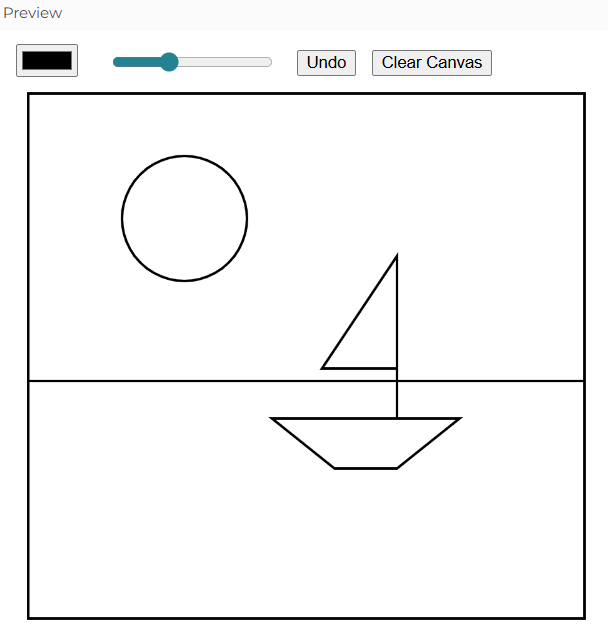

Visitthis linkto play a coloring game I coded for ATLS 1350,Design Foundations.
Below are digital projects I have done while completing my undergrad, specifically within my Creative Technology & Design minor.

Visitthis linkto play a coloring game I coded for ATLS 1350,Design Foundations.